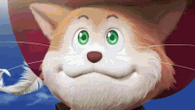

Animation studios ranked
Although there are many great unknown studios that are or on the verge of success, There are very few animation studios that have gained recognition and have solidified a spot for themselves on the mount rushmore of animation studios
- Toei animation

- Mappa studios

- wit studios:no picture
- Ufotable: no picture
- Madhouse:no picture
These 5 Studios listed above have the history and the track record to earn a spot on the mount rushmore for animation studios. Some of these studios on the list had a rapid and quick rise to success by adapting popular manga such as Mappa, but
some studios like Wit and Toei have been around since the early 1990s and late 2000s have slowly gained credibility through animating household names like Dragonball Z.